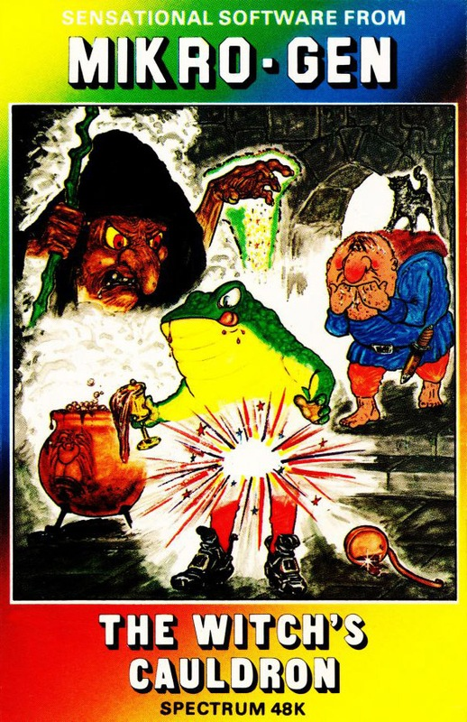
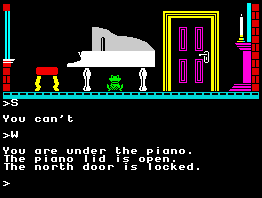

The Witch's Cauldron


{kind=link}

| Publisher: | Mikro-Gen |
| Price: | £6.95 |
| Year: | 1985 |
| Source: | CRASH, Issue 17 |

As far as I am aware (and, as it happens I am very aware due, in no small part to the flurry of free literature which still greets Neptune Software every morning) (Derek had his own software company called Neptune — Ed) Mikro-Gen have not to date released an adventure. However, there is no doubting the stir they caused in arcade with their brilliant Wally series and so the question is, have they brought the flair shown in those terrific games to the adventure scene. The answer, in short, is yes, they have.
If you are one of the many who read this column not through any great interest in adventure but more a canny desire to squeeze as much out of your CRASH as possible, then let me tell you this game does not have you cast in the role of a saviour of middle-earth or anything exotic. No, here we have a much simpler and more commercial storyline which will have a very broad appeal, quickly introducing a superbly presented adventure. When I say commercial, I mean this in the best sense of the word; you’ll feel the not too exorbitant sum is worth it, so you too can enjoy this super game.

The Witch’s Cauldron of the title is where you must mix the correct ingredients of a potion to begin the long task of righting the wrong the evil witch Hazel has inflicted upon you, namely turning you into a green slimy, but humanly intelligent toad. The path to your old human form is not an easy one as you must take on all the curious guises which eventually lead to your human persona and well-earned freedom. The different forms you endure early on include a toad, cat, ape and bat, and each is true to its own unique character so that a toad might hop through a gap closed to a cat, while the cat’s agility easily allows it to negotiate a window ledge and so open a whole new area to investigation. Not only do these metamorphoses add a fresh angle to the game but also the various hoppings of the creatures are reflected in the picture so a frog which hops onto a couch is seen to do just that.
So you hop off from a location which varies each time you begin a new game (a feature which woke me up from the semi-comatose state which befalls all reviewers) and what is more, the objects and happenings also move around which very much reflects the thinking behind a game which does not wish to be seen as just another adventure. In the upper half of the screen is a picture of where you stand which is remarkable for its quality of design, bringing the clarity of arcade graphics to an adventure. Fuzzy shading has thankfully not been employed so pictures are a delight to behold as you ponder on your next move. And ponder you will, as the problems are superbly pitched into that perplexing, but engaging, area between lucid logicality and mind-frosting ingenuity. Once a problem is solved you quite rightly pat yourself on the back and reset your brain cells to TV mode happy in the belief that when called upon every brain cell can do its duty. It’s that sort of game.
The vocabulary can be choosy over what it will accept, eg GET GOLD will not pick up a gold ring, but you soon get used to the sort of input the program requires and sometimes a prompt will point you in the right direction, eg GET SPOON very politely calls up ‘There may be more than one of these, use the full description’. Corrected, you input GET SILVER SPOON. A list of useful words is listed in the precise instructions which neatly reside in the program itself and can be called up at any time. Sentence constructions include PUT THE WATER INTO THE CAULDRON and OIL THE SOUTH DOOR. Taking everything with GET ALL proves very useful, not least when the first time you realise you are carrying too much is when in a tricky moment you go and drop everything. It is in areas like these where this game has taken adventuring ideas and given them a twist making them fresh and interesting. Moving around is very fluid with IN, OUT, UP, DOWN, taking your current persona whether frog, cat, ape or bat hopping, crawling, loping and flapping all over the place.
This adventure is not a long one but this is not a serious drawback as each location is of major import and has some bearing on the eventual track of the game. There is a super feeling of quality about the whole thing with graphics making up detailed and exquisite illustrations, puzzles which are a joy to pick over, and characters that behave true to form. Witch’s Cauldron is a seething mass of puzzles and bubbles of fun.
COMMENTS
| Difficulty: | Quite easy |
| Graphics: | For each location shows your character. Similar quality to the Wally series, very good |
| Presentation: | Very good static graphics and scrolling text |
| Input facility: | Allows full sentence |
| Response: | Instantaneous |
| General Rating: | An excellent and original adventure. |
| Atmosphere: | 9/10 |
| Vocabulary: | 8/10 |
| Logic: | 10/10 |
| Addictive Quality: | 9/10 |
| Overall Value: | 10/10 |